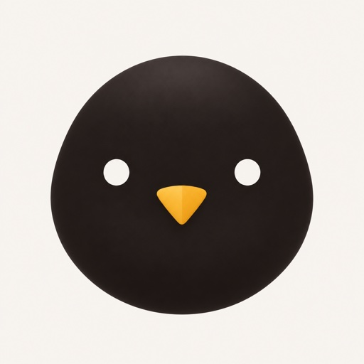

Group notices, the Facilitator agent and Settings copy. Red marks what changes.

Welcome everyone to the Developer tools and CI group.
@Alex Rivera: working on CI workflows and tests; can help with CI debugging and flaky tests.
@Bea Okafor (invited): working on ICLR 2027 reviewing and the Kordi hackathon GitHub app; can help with peer review.
Bea has not accepted yet, but is tagged and her card is shared with the group.
@Bea Okafor joined. Working on ICLR 2027 reviewing and kordi hackathon GitHub app; can help with peer review and gitHub app integrations. Shares large language models with @Alex Rivera.
Welcome to the Developer tools and CI group.
@Alex Rivera: working on CI workflows and tests; can help with CI debugging and flaky tests.
Invited people are left out until they accept: no tag, no card.
@Bea Okafor joined. Working on ICLR 2027 reviewing and Kordi hackathon GitHub app; can help with peer review and GitHub app integrations. Shares large language models with @Alex Rivera.